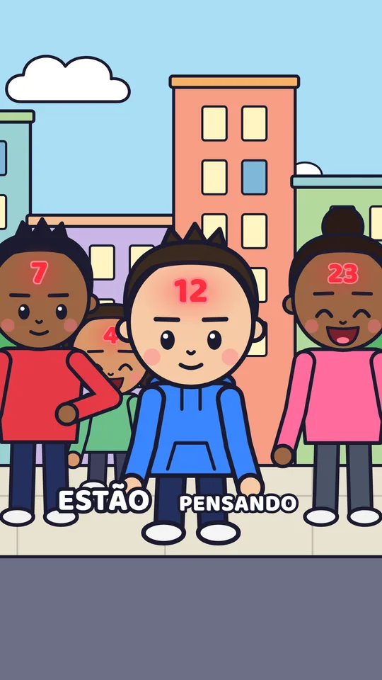
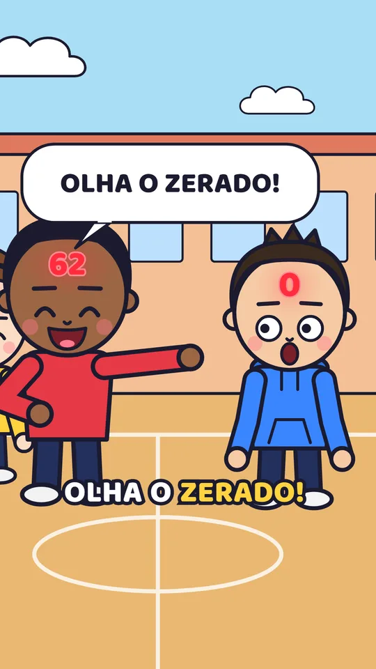
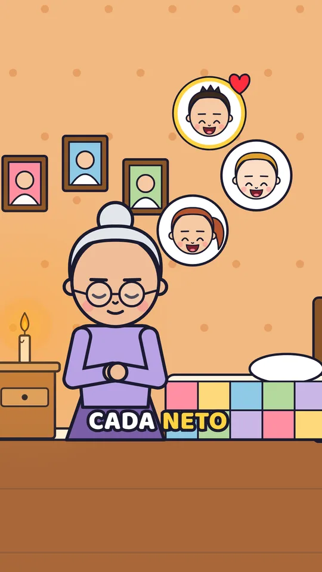

O Claude Code monta
o vídeo inteiro por código
Você conversa em português e o Claude Code escreve o projeto: desenha os personagens, gera a voz, sincroniza a legenda e renderiza o MP4 no seu computador. O personagem nunca muda, porque ele é código.
- 47 cenas
- 2 min 23 s
- 31 min até os quadros
- render em 144 s
O vídeo de exemplo deste método
Prepare o computador
São quatro programas. Depois de instalados, você não mexe mais neles: quem usa é o Claude Code.
Claude Code
O Claude que trabalha dentro de uma pasta do seu computador, criando arquivos e rodando comandos. Vem no aplicativo do Claude para computador e pede um plano pago.
Node.js, Python e FFmpeg
O Node roda o Remotion, que monta o vídeo. O Python roda a voz e a transcrição. O FFmpeg junta imagem e som.
Instalação no Windows
Abra o PowerShell, cole a linha e espere terminar. No Mac, o Claude Code instala o que faltar se você pedir.
winget install Python.Python.3.12; winget install OpenJS.NodeJS.LTS; winget install Gyan.FFmpeg
Do tema ao MP4 em 6 passos
As caixas ficam marcadas neste navegador.
O primeiro vídeo é o mais lento. Ele inclui instalar tudo e criar os personagens. Do segundo em diante, o Claude reaproveita o boneco, os cenários e as regras do canal.
Quer pular a montagem do projeto? A skill animate já traz sete estilos prontos e o mesmo ritual de aprovações.
Caminho B: animação 2D por código Recomendado
O Claude Code produz o vídeo inteiro: personagens em SVG, animação em React com Remotion, voz local e render em MP4. Não gasta crédito de gerador, o personagem nunca muda de cara e tudo se refaz com um comando. Foi assim que o vídeo desta página nasceu.
- Prepare o ambiente. Claude Code, Node.js, FFmpeg e Python entre as versões 3.10 e 3.12. Peça ao próprio Claude Code para instalar o resto: Remotion, Kokoro e Whisper.
- Escreva as regras do canal em um CLAUDE.md. Formato (1080x1920, 30 fps), paleta, fonte e estilo das legendas, ritmo de cortes. O Claude Code lê esse arquivo a cada sessão, então todo episódio parte das mesmas regras.
- Analise referências. Separe de 5 a 10 Shorts do estilo que quer e peça ao Claude para extrair estrutura e ritmo: gancho, detalhes que escalam, pivô e virada. Copie a estrutura, nunca o conteúdo.
- Crie os personagens como componentes. Aqui usamos um boneco só, com parâmetros: pele, cabelo, roupa, pose e as expressões neutro, feliz, triste, assustado e bravo. Menino, pai, mãe, professora, avó e colegas são o mesmo código com valores diferentes.
- Gere a voz e o tempo de cada palavra. O Kokoro narra localmente, uma frase por vez, o que já entrega o início e o fim exatos de cada cena. O Whisper transcreve o áudio e devolve o tempo de cada palavra para a legenda.
- Peça as cenas. Uma por frase: qual cenário, qual expressão, qual movimento de câmera, quais objetos aparecem e em que palavra cada coisa acontece.
- Revise quadros parados e renderize. Antes do render final, peça 6 quadros de momentos diferentes. Aprovou, renderiza o MP4 e confere no celular.
O que rodou de verdade
A linha de produção do vídeo de exemplo, com os números de cada etapa.
# 1. voz + tempo de cada palavra (Kokoro e Whisper) python tts/gerar.py 1.0 # 2. um quadro de cada cena, para revisar antes do render node tools/quadros.mjs todas --escala=0.33 # 3. render final npx remotion render src/index.ts Short out/short.mp4 --codec=h264 --crf=18






O que deu errado e como foi resolvido
Nenhuma produção sai limpa de primeira. Estes foram os tropeços reais da sessão.
O Whisper não abria o áudio
A biblioteca de áudio instalada era incompatível com o decodificador. Solução: reamostrar o áudio para 16 kHz no próprio script e entregar os números direto ao Whisper.
O número ficava lavado ao brilhar
Traço transparente por cima de texto criava riscos dentro dos dígitos. Solução: halo em gradiente radial e contorno opaco.
O render final travou baixando a fonte
A fonte vinha da internet a cada quadro e a rede falhou. Solução: guardar o arquivo da fonte dentro do projeto.
A fonte local saiu serifada
O primeiro render completo veio com a letra errada, porque o nome da família estava registrado diferente. Só apareceu porque conferimos um quadro do MP4 final. Corrigido e renderizado de novo.
Opções de voz e quanto cada cota rende
O vídeo de exemplo usou o Kokoro, que roda no seu computador e não tem limite. Dá para trocar por qualquer serviço de voz. As contas abaixo usam a narração real do exemplo: 415 palavras, 2.270 caracteres com espaços, 2 minutos e 23 segundos.
Crédito não é palavra. O plano gratuito da ElevenLabs dá 10 mil créditos por mês, e no site cada caractere custa 1 crédito, em qualquer modelo. Dez mil créditos são cerca de 1.830 palavras, e não 10 mil palavras.
O plano gratuito da ElevenLabs em vídeo
- Cada nova tentativa gasta de novo. Se você regerar o roteiro uma vez por causa de uma pronúncia, os 4 vídeos viram 2. Revise o texto antes e gere tudo em uma chamada só.
- O plano gratuito não serve para canal monetizado. A documentação da ElevenLabs diz que os direitos de uso comercial só existem nos planos pagos.
- O primeiro plano pago resolve. O Starter custa 6 dólares por mês, dá 30 mil créditos e inclui licença comercial. São 13 vídeos, perto de 46 centavos de dólar por vídeo.
- Pela API a conta pode dobrar. Os modelos Flash e Turbo cobram meio crédito por caractere quando usados pela API, o que levaria os mesmos 10 mil créditos a 8 vídeos.
Comparação das opções
Quantos vídeos iguais ao do exemplo cabem na cota de cada serviço. O número de vídeos depende só dos caracteres. O tempo de narração varia com a velocidade de cada voz.
| Opção | Cota por mês | Vídeos de 2:23 | Narração | Observação |
|---|---|---|---|---|
| Kokoro, local | Sem limite | sem limite | sem limite | Roda no seu computador, sem conta e sem custo. Foi a voz do vídeo de exemplo. |
| ElevenLabs, plano gratuito | 10 mil créditos | 4 | 10 min | Sem licença comercial. |
| ElevenLabs Starter | 30 mil créditos por 6 dólares | 13 | 31 min | Com licença comercial. |
| ElevenLabs Creator | 121 mil créditos por 22 dólares | 53 | 2 h 07 | Com licença comercial. |
| Google Cloud, vozes Chirp 3 HD | 1 milhão de caracteres grátis | 440 | 17 h 30 | Depois da cota, 30 dólares por milhão. As vozes WaveNet e padrão têm 4 milhões grátis. |
| Azure Speech, plano F0 | 500 mil caracteres grátis | 220 | 8 h 45 | Vozes neurais. |
| Amazon Polly, vozes neurais | 1 milhão de caracteres grátis | 440 | 17 h 30 | Grátis só nos 12 primeiros meses. Depois, 16 dólares por milhão. |
OpenAI tts-1 | Sem cota grátis | US$ 0,03 cada | pago por uso | 15 dólares por milhão de caracteres. A versão tts-1-hd custa o dobro. |
Sobre estes números. Cotas e preços foram lidos nas páginas oficiais de cada serviço em 24 de novembro de 2026 e mudam com frequência. A tabela trata só de cota e de preço: não comparamos a qualidade das vozes de ouvido nesta sessão. Serviços de nuvem costumam pedir conta com cartão cadastrado mesmo para usar a cota grátis.
A conta para o seu roteiro
Vídeos por mês
Divida a cota pelo número de caracteres do roteiro, contando os espaços. Exemplo: 10.000 dividido por 2.270 dá 4 vídeos.
Regra de bolso
Um minuto de narração rápida em português gasta perto de 950 caracteres, ou 174 palavras.
Roteiro de 2:30
Com 400 palavras, o roteiro fica perto de 2.200 caracteres. Reserve o dobro se costuma regerar.
Como trocar a voz no Caminho B
Só o passo 1 do prompt de criação muda. O resto do projeto continua igual, porque o Whisper descobre os tempos em qualquer áudio.
1. Gere o áudio da narração em português do Brasil com a API da ElevenLabs: modelo eleven_multilingual_v2, voz [NOME OU ID DA VOZ]. Leia a chave da variável de ambiente ELEVENLABS_API_KEY e nunca escreva a chave no código. Envie o texto inteiro em uma única chamada, para gastar os créditos uma vez só, e me diga quantos caracteres serão cobrados antes de chamar. Depois transcreva com Whisper para ter o tempo de cada palavra e use esses tempos para achar o início e o fim de cada frase.
1. A narração já está gravada em public/narracao.mp3 e o texto exato está em tts/narracao.txt, uma frase por linha. Não gere áudio novo. Transcreva o arquivo com Whisper para ter o tempo de cada palavra, alinhe com o texto e use esses tempos para achar o início e o fim de cada frase.
Faça o roteiro de teste: 14 dias, 6 vídeos
O teste responde a uma pergunta: qual dos dois caminhos dá mais retenção por hora de trabalho? Você publica 3 vídeos de cada estilo, com a mesma fórmula de roteiro, e compara. As caixas ficam marcadas neste navegador.
Fase 1: preparação, dias 1 e 2
Fase 2: piloto, dias 3 a 5
Fase 3: publicação, dias 6 a 11
Fase 4: análise, dias 12 a 14
Uma variável por rodada. Se trocar estilo e duração ao mesmo tempo, você não sabe o que causou a diferença. Seis vídeos são pouco para conclusões firmes: trate o resultado como direção, não como prova.
Nossas métricas: o que esta conversa gastou
Tudo nesta página saiu de uma única conversa com o Claude Fable 5.2 no Claude Code: as 20 premissas, a narração, o projeto Remotion, o vídeo e este tutorial. Os números abaixo foram lidos do registro da própria sessão.
O vídeo
O tempo
| Etapa | Tempo de relógio | O que entrou |
|---|---|---|
| Premissas e narração | 8 min | Prompts 1 e 2, com a contagem de palavras conferida frase a frase |
| Do pedido do vídeo aos 6 quadros | 31 min | Instalação, voz, transcrição, 47 cenas, legendas e duas rodadas de revisão de quadros |
| Render final | 2 min 24 s | Feito três vezes. A fonte errada e uma legenda que sobrava 2 quadros depois de cada corte só apareceram ao conferir o MP4 |
Os tokens e o custo
A sessão rodou em um plano de assinatura, então não houve cobrança por token. Para dar uma ordem de grandeza, a última coluna mostra quanto o mesmo uso custaria na API, pelos preços de tabela do Claude Fable 5.2: 8 dólares por milhão de tokens de entrada, 40 por milhão de saída e 0,20 por milhão de leitura de cache.
| Medida | Produção do vídeo | Tutorial e publicação |
|---|---|---|
| Respostas do modelo | 36 | 30 |
| Chamadas de ferramenta | 76 | 63 |
| Tokens de saída | 190.260 | 80.327 |
| Tokens gravados em cache | 269.786 | 206.517 |
| Tokens lidos do cache | 7.607.049 | 13.243.810 |
| Equivalente na API | US$ 12 a 13 | US$ 8 a 9 |
Como ler esses números. A leitura de cache parece enorme porque cada resposta relê a conversa inteira, mas é a parte barata: no vídeo, ela responde por cerca de 1,50 dólar. Mais da metade do custo equivalente do vídeo vem dos tokens de saída, ou seja, do código e do raciocínio que o modelo escreveu. A faixa de valores existe porque gravar em cache custa de 1,25 a 2 vezes o preço de entrada, conforme a duração do cache. A coluna do tutorial foi fechada pouco antes de publicar, então ficou um pouco abaixo do total real.
A tabela para o seu canal
A métrica principal é a porcentagem de pessoas que viram o Short em vez de deslizar, que o YouTube Studio chama de "Visualizado vs. deslizado". Depois, a porcentagem média assistida. Uma linha por vídeo.
| Vídeo | Caminho | Horas gastas | Custo | Visualizações | Viu vs. deslizou | Média assistida | Curtidas por visualização | Inscritos ganhos |
|---|---|---|---|---|---|---|---|---|
| 1 | A | |||||||
| 2 | B | |||||||
| 3 | A | |||||||
| 4 | B | |||||||
| 5 | A | |||||||
| 6 | B |
Já fez o primeiro? Dê um visual próprio ao canal.
O método avançado mostra três rotas: 3D pintado por código, ilustrações com cortes rápidos e um kit de mundo 3D.